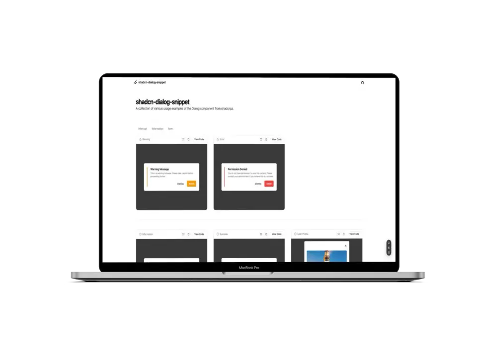
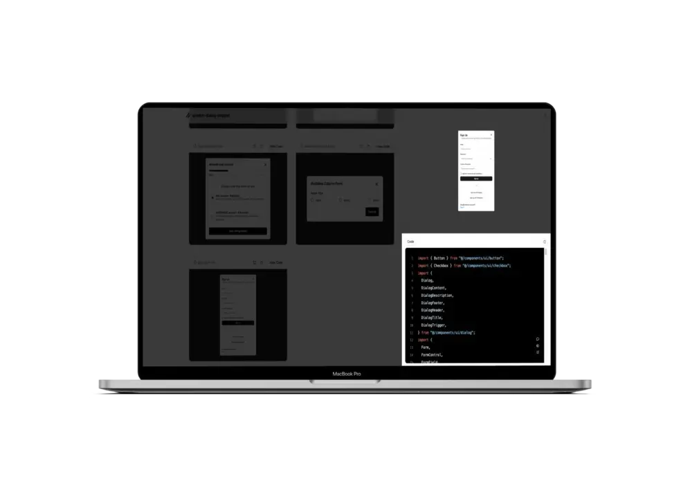
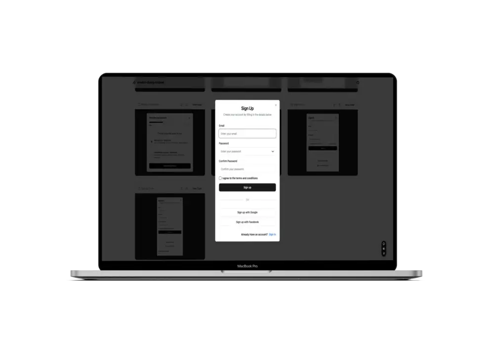

01
ReactTypeScriptViteTailwind CSSMixpanelshadcn/uiBiome
Developer Experience
수동 스크립트를 Vite 플러그인으로
컴포넌트 코드를 문자열로 변환하는 과정에서 변환 누락과 반복 작업이 발생했습니다. Vite 플러그인을 구현해 개발 서버 실행 시 전체 파일을 변환하고, 수정된 파일만 다시 처리하도록 구성했습니다.
- buildStart에서 전체 파일을 변환해 초기 상태를 일치시켰습니다.
- handleHotUpdate에서 변경 파일만 반영해 HMR을 지원했습니다.
- 기존 변환 결과를 캐시하고 출력 파일은 Biome으로 자동 포맷했습니다.


